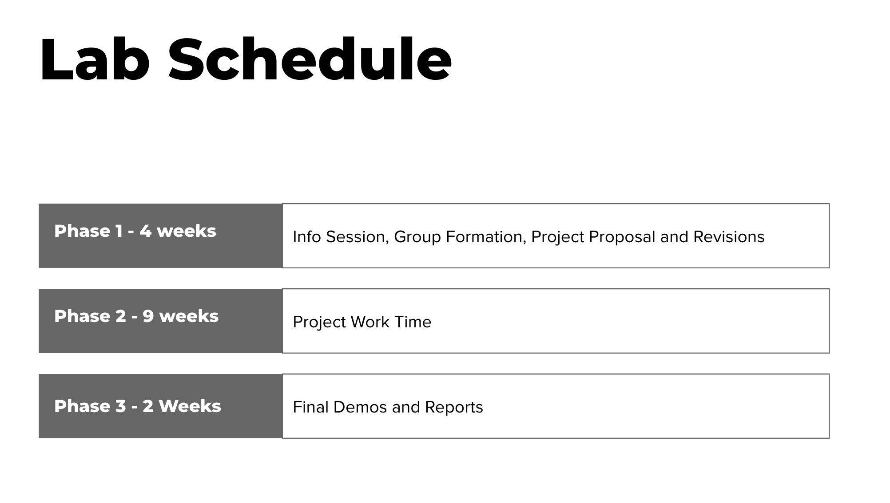
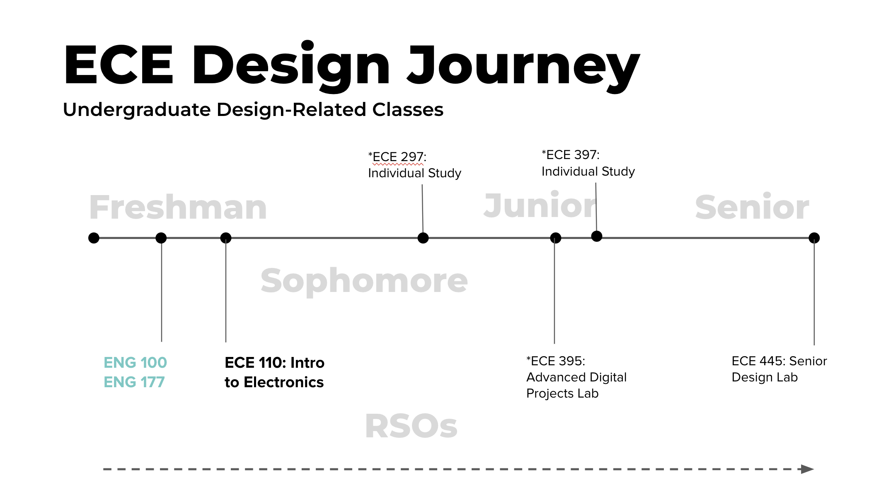
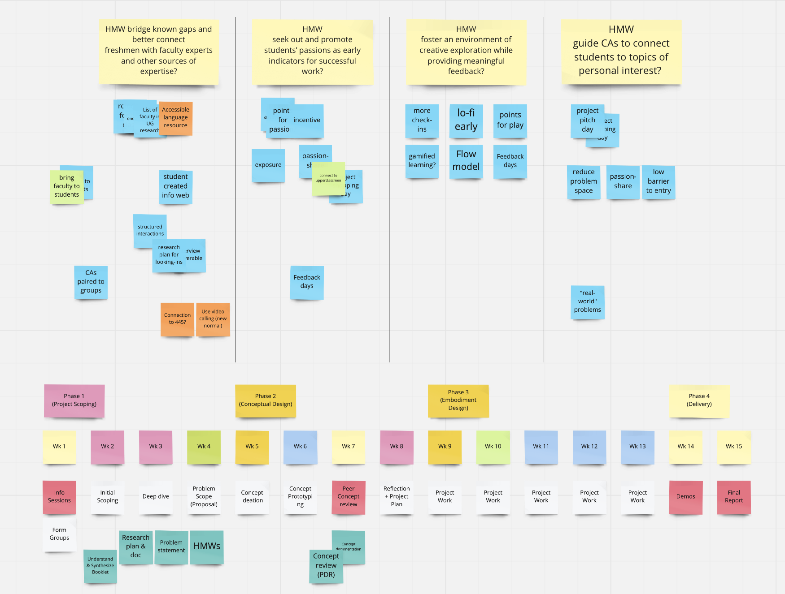

CURRICULUM DEVELOPMENT
One of the missions at SCD is to teach design thinking by using human-centered design to re-imagine our campus. The curriculum development team thrives to identify opportunities for bringing in design thinking in existing engineering curriculums. I joined the curriculum development team bringing my insights as a previous engineering student. My colleagues at SCD and I have been collaborating with professors from departments of computer science, physics, electrical and computer engineering. I will go through one project example below.
PROBLEM
Current engineering curriculum at Grainger College of Engineering is focused on making functional prototypes without much emphasis on end users. We plan to bring design thinking into engineering classrooms by designing human-centered curriculum for workshops, and semester-long projects.
RESPONSIBILITIES
I worked specifically with the Department of Electrical and Computer Engineering (ECE) on ECE 110 - Introduction to Electronics where students will prepare a project proposal and tackle down technical
challenges of their choice. And my responsibilities included:
- Pitched our research proposal to collaborate with ECE professors
- Recruited and interviewed 10+ students, course aides
- Provided additional perspectives as a previous ECE 110 student
APPROACH
DESIGN JOURNEY


INTERVIEW INSIGHTS
After conducting interviews with 2 professors, 2 course aids and 4 students who have previously taken the class. Here are some of our findings:
- Passion is the core drive.
- Course aides are the gatekeepers.
- Little time for reflection.
Passionate students are more engaged in the project. They jump in early and stay motivated which leads to success, while students without a personal connection to their project are less engaged.
They set the tone and scope for student projects, provide weekly feedback and technical guidance. But only a few course assistants have the experience and knowledge to answer all questions.
A working prototype is not the goal of the class.
BRIANSTORM
- How might we guide course aides to connect students to projects they can be passionate about?
- How might we bridge known gaps and better connect learners with faulty experts and other sources of expertise?
- How might we foster an environment of creative exploration while providing meaningful feedback?
- How might we seek out and promote students' passions as early indicators for successful work?
We then laid out high-level questions and brainstormed ideas on Miro for possible ways to:

NEXT STEPS
After proposing week-by-week planning including design thinking workshop and check, we will pilot the class with the honor sections of ECE 110 class in Fall 2020 hybridly.